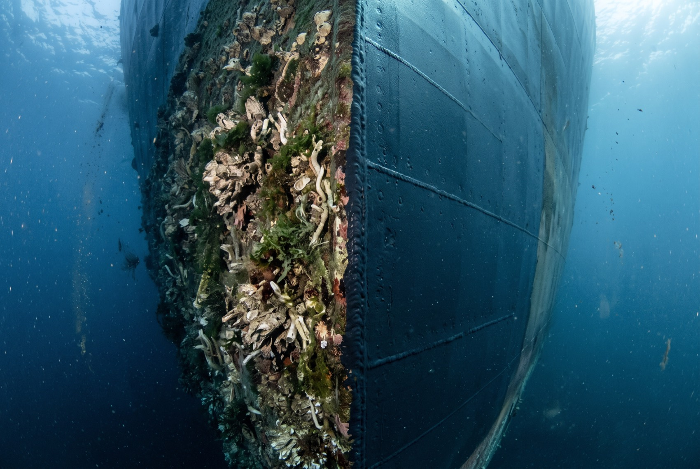
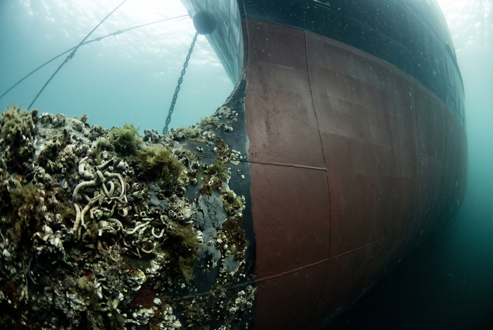
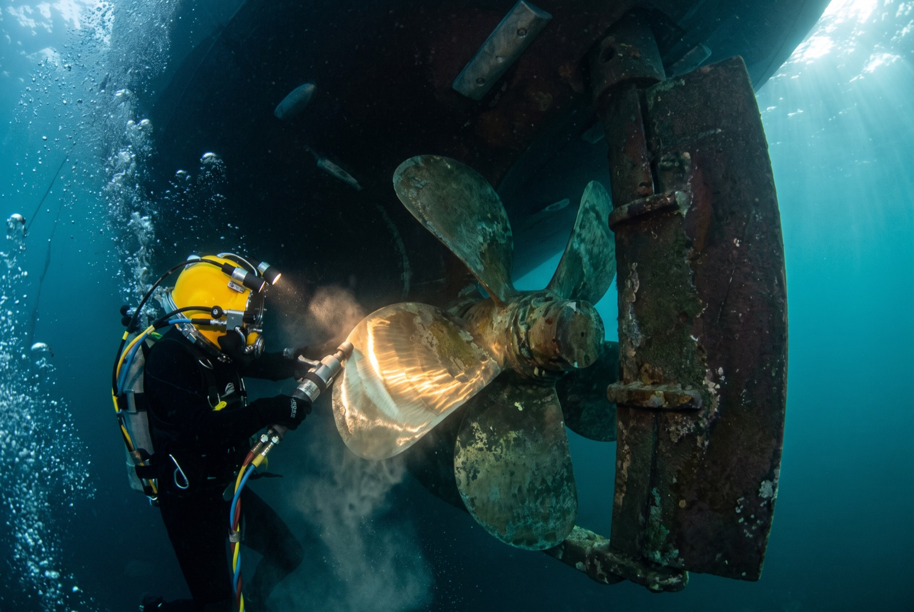
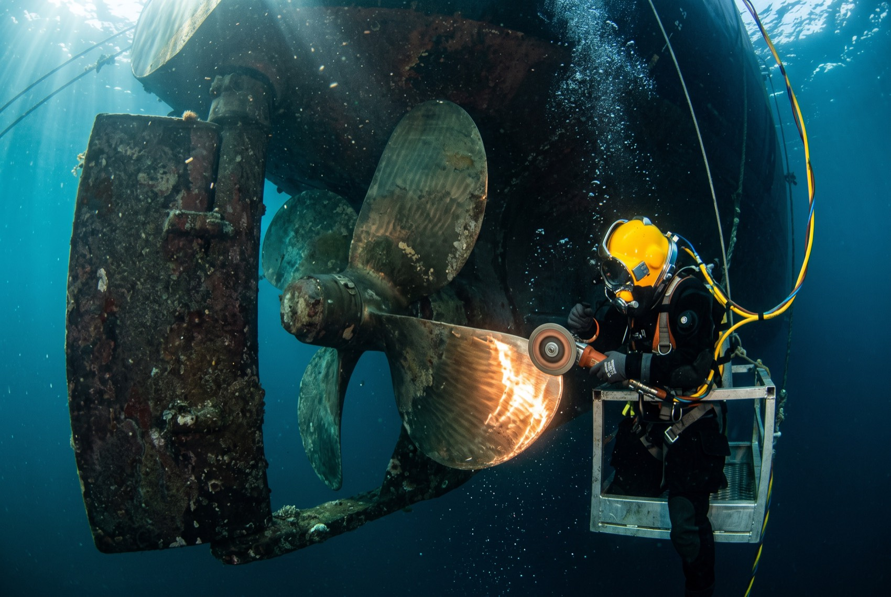
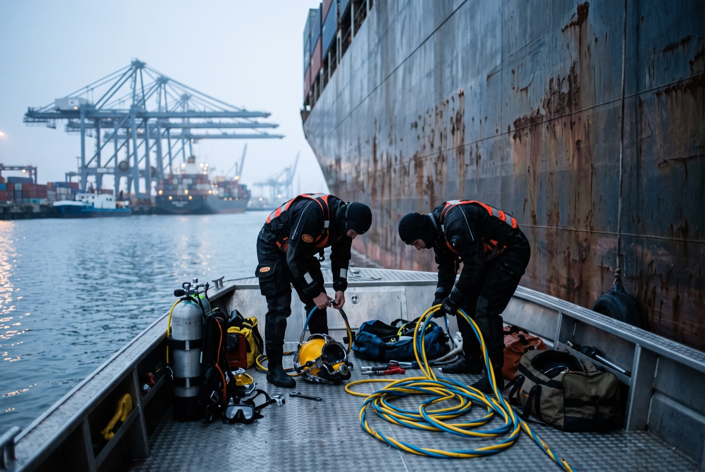
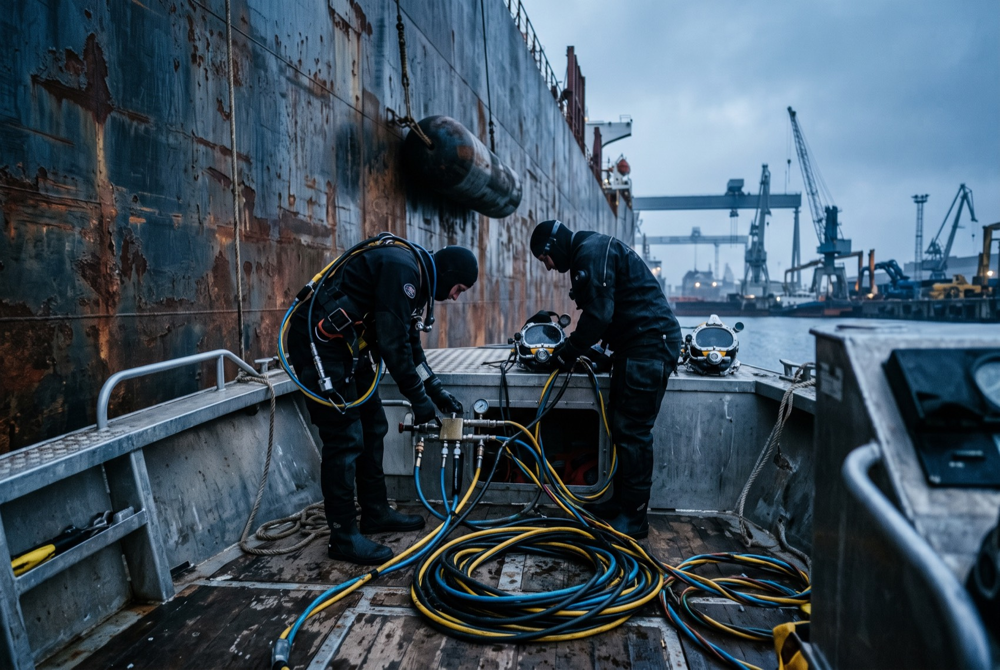

<meta charset="utf-8">
<meta name="viewport" content="width=device-width,initial-scale=1">
<title>Ocean Blue Diving · Operations</title>
<meta name="description" content="Underwater hull maintenance for large vessels. Fouling removal, in water, with zero delay." data-attr="content" data-pt="Manutencao subaquatica de grandes embarcacoes. Remocao de fouling, na agua, sem atraso." data-en="Underwater hull maintenance for large vessels. Fouling removal, in water, with zero delay.">
<link rel="preconnect" href="https://fonts.googleapis.com">
<link rel="preconnect" href="https://fonts.gstatic.com" crossorigin>
<link href="https://fonts.googleapis.com/css2?family=Archivo:wght@600;700;800&family=IBM+Plex+Sans:wght@400;500;600&family=IBM+Plex+Mono:wght@400;500&display=swap" rel="stylesheet">
<link rel="stylesheet" href="assets/style.css">

<header class="top">
  <div class="wrap top-in">
    <a class="brand" href="index.html">
      
      <span class="brand-name">SERVICE OCEAN BLUE<span>Diving</span>
        <em class="brand-tag" data-pt="Soluções subaquáticas para operações pesadas" data-en="Underwater solutions for heavy operations">Underwater solutions for heavy operations</em>
      </span>
    </a>
    <button class="menu-toggle" aria-expanded="false" aria-label="Menu">MENU</button>
    <nav class="main">
        <a href="index.html" data-pt="Início" data-en="Home">Home</a>
        <a href="servicos.html" data-pt="Serviços" data-en="Services">Services</a>
        <a href="sobre.html" data-pt="A empresa" data-en="Company">Company</a>
        <a href="certificacoes.html" data-pt="Segurança" data-en="Safety &amp; Compliance">Safety &amp; Compliance</a>
        <a href="cobertura.html" data-pt="Cobertura" data-en="Coverage">Coverage</a>
        <a href="galeria.html" aria-current="page" data-pt="Operações" data-en="Operations">Operations</a>
        <a href="contato.html" data-pt="Contato" data-en="Contact">Contact</a>
    </nav>
    <div class="lang">
      <button data-lang="en">EN</button>
      <button data-lang="pt">PT</button>
    </div>
  </div>
</header>

<section class="pagehead on-dark">
  <div class="wrap">
    <div class="kicker" data-pt="Operações" data-en="Operations">Operations</div>
    <h1 data-pt="O trabalho, como ele realmente é" data-en="The work, exactly as it is">The work, exactly as it is</h1>
    <p class="lede" data-pt="Site de serviço técnico com foto de banco de imagem entrega na hora que a empresa é nova. Esta página só existe com material real." data-en="A technical services site with stock photography gives away instantly that the company is new. This page only exists with real material.">A technical services site with stock photography gives away instantly that the company is new. This page only exists with real material.</p>
  </div>
</section>

<section>
  <div class="wrap">
    <div class="selo-estudo" data-pt="Imagens de estudo · substituir pelas fotos reais da operação" data-en="Study images · to be replaced with real operation photography">Study images · to be replaced with real operation photography</div>
    <div class="galeria">
      <figure class="figura larga">
        
        <figcaption data-pt="Incrustação e chapa limpa, lado a lado" data-en="Fouling and clean plating, side by side">Fouling and clean plating, side by side</figcaption>
      </figure>
      <figure class="figura">
        
        <figcaption data-pt="Detalhe da incrustação" data-en="Marine growth, close up">Marine growth, close up</figcaption>
      </figure>
      <figure class="figura">
        
        <figcaption data-pt="Hélice antes do polimento" data-en="Propeller before polishing">Propeller before polishing</figcaption>
      </figure>
      <figure class="figura larga">
        
        <figcaption data-pt="Polimento de hélice em operação" data-en="Propeller polishing under way">Propeller polishing under way</figcaption>
      </figure>
      <figure class="figura larga">
        
        <figcaption data-pt="Preparação a bordo, no costado do navio" data-en="Preparation on deck, alongside the vessel">Preparation on deck, alongside the vessel</figcaption>
      </figure>
      <figure class="figura">
        
        <figcaption data-pt="Equipamento de mergulho comercial" data-en="Surface supplied diving equipment">Surface supplied diving equipment</figcaption>
      </figure>
    </div>
  </div>
</section>

<section>
  <div class="wrap">
    <div class="stub">
      <h3 data-pt="Material necessário" data-en="Material needed">Material needed</h3>
      <p data-pt="Estrutura pronta. O conteúdo entra assim que a Mariana mandar o material desta página." data-en="Structure is ready. Content goes in as soon as Mariana sends the material for this page.">Structure is ready. Content goes in as soon as Mariana sends the material for this page.</p>
      <ul>
      <li data-pt="Mergulhador na água, em operação" data-en="Diver in the water, working">Diver in the water, working</li>
      <li data-pt="Casco antes e depois da limpeza, o par que mais convence" data-en="Hull before and after cleaning, the pair that convinces most">Hull before and after cleaning, the pair that convinces most</li>
      <li data-pt="Equipamento e embarcação de apoio" data-en="Equipment and support boat">Equipment and support boat</li>
      <li data-pt="Equipe no cais" data-en="Team on the quay">Team on the quay</li>
      <li data-pt="Se houver vídeo de inspeção, mesmo curto, vale mais que dez fotos" data-en="If there is inspection footage, even short, it is worth more than ten photographs">If there is inspection footage, even short, it is worth more than ten photographs</li>
      </ul>
    </div>
  </div>
</section>

<section class="cta">
  <div class="wrap cta-in">
    <div>
      <h2 data-pt="Precisa de um casco limpo antes da próxima viagem?" data-en="Need a clean hull before the next voyage?">Need a clean hull before the next voyage?</h2>
      <p class="lede" style="margin-top:16px" data-pt="Diga o porto, a janela e o tipo de embarcação. Respondemos com escopo e prazo." data-en="Tell us the port, the window and the vessel type. We come back with scope and schedule.">Tell us the port, the window and the vessel type. We come back with scope and schedule.</p>
    </div>
    <a class="btn btn-dark" href="contato.html" data-pt="Solicitar orçamento" data-en="Request a quote">Request a quote</a>
  </div>
</section>

<footer class="site">
  <div class="wrap">
    <div class="foot-grid">
      <div>
        
        <span class="brand-name" style="font-size:19px">SERVICE OCEAN BLUE<span>Diving</span></span>
        <p style="margin-top:16px;max-width:34ch" data-pt="Manutenção subaquática de grandes embarcações. Base em Salvador, Bahia, Brasil." data-en="Underwater maintenance for large vessels. Based in Salvador, Bahia, Brazil.">Underwater maintenance for large vessels. Based in Salvador, Bahia, Brazil.</p>
      </div>
      <div>
        <h4 data-pt="Serviços" data-en="Services">Services</h4>
        <a href="servicos.html" data-pt="Limpeza de casco" data-en="Hull cleaning">Hull cleaning</a>
        <a href="servicos.html" data-pt="Polimento de hélice" data-en="Propeller polishing">Propeller polishing</a>
        <a href="servicos.html" data-pt="Inspeção subaquática" data-en="Underwater inspection">Underwater inspection</a>
        <a href="servicos.html" data-pt="Reparos na água" data-en="In-water repairs">In-water repairs</a>
      </div>
      <div>
        <h4 data-pt="Empresa" data-en="Company">Company</h4>
        <a href="sobre.html" data-pt="A empresa" data-en="About us">About us</a>
        <a href="certificacoes.html" data-pt="Segurança" data-en="Safety">Safety</a>
        <a href="cobertura.html" data-pt="Cobertura" data-en="Coverage">Coverage</a>
        <a href="galeria.html" data-pt="Operações" data-en="Operations">Operations</a>
      </div>
      <div>
        <h4 data-pt="Contato" data-en="Contact">Contact</h4>
        <a href="mailto:commercial@serviceocean.com.br">commercial@serviceocean.com.br</a>
        <a href="https://wa.me/5571991015763">+55 71 99101-5763</a>
        <p style="margin-top:14px"><span class="todo" data-pt="confirmar canais oficiais" data-en="confirm official channels">confirm official channels</span></p>
      </div>
    </div>
    <div class="foot-bottom">
      <span>© 2026 Ocean Blue Diving</span>
      <span data-pt="Rascunho de trabalho · não publicado" data-en="Working draft · not published">Working draft · not published</span>
    </div>
  </div>
</footer>
<script src="assets/i18n.js"></script>
